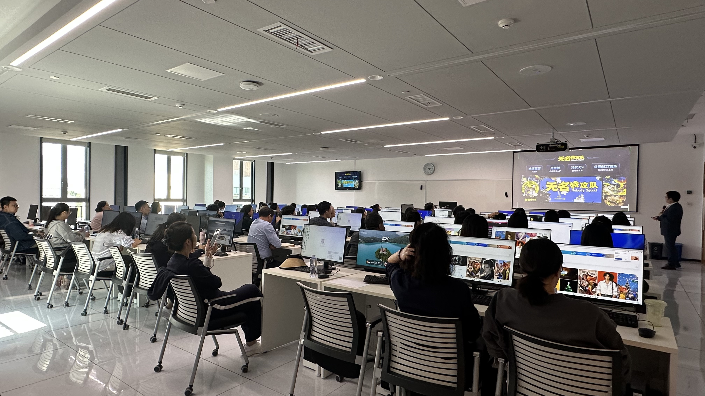
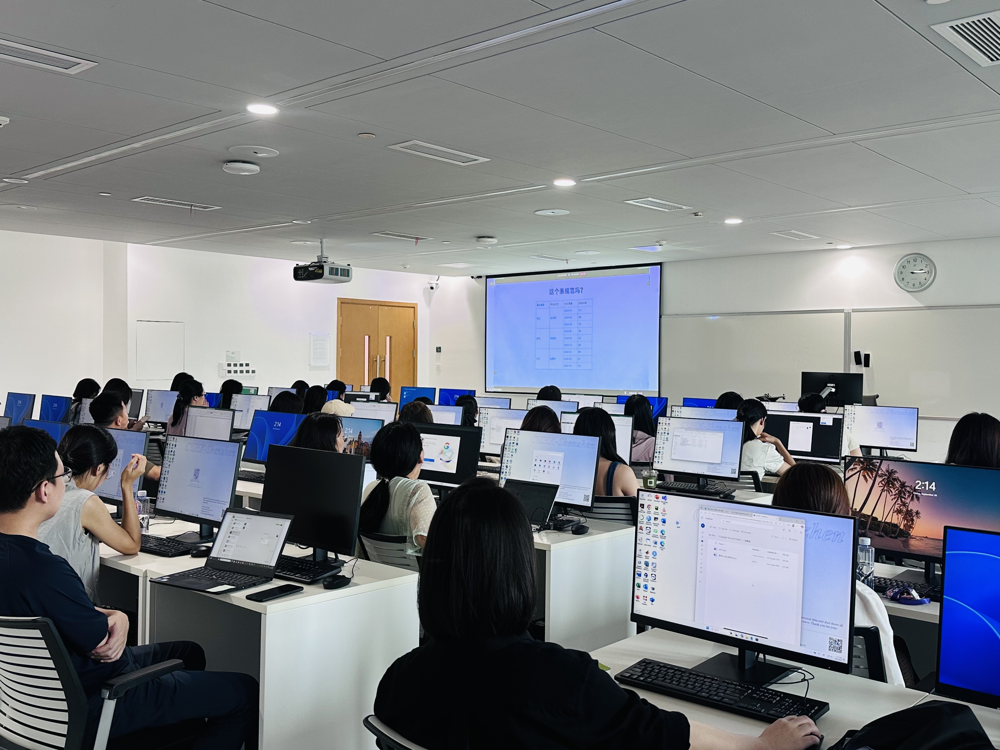
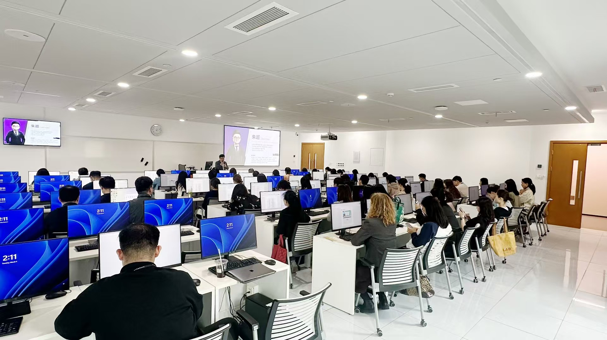
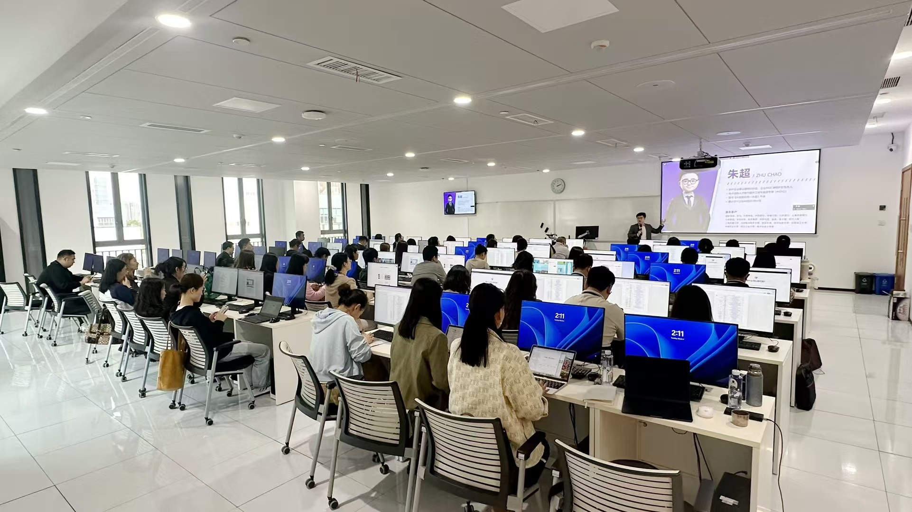
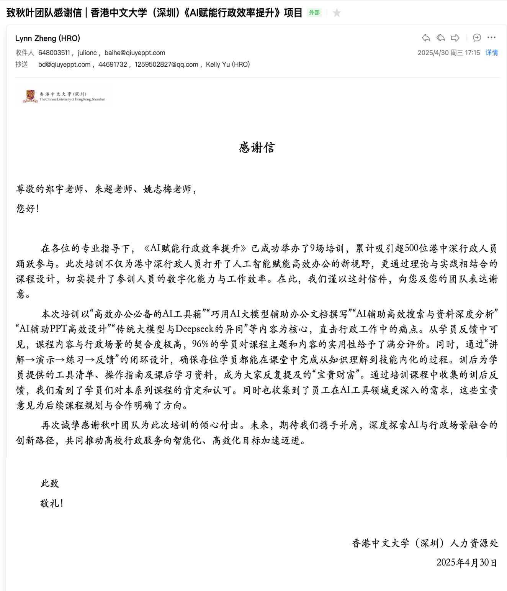

自2025年2月到2025年12月，由学校人力资源处针对全校行政人员组织人工智能赋能行政工作系列专题培训，全年共举办24期培训，项目期间公司收到人事处发过的感谢邮件，称“理论与实践相结合的课程设计，切实提升了参训人员的数字化能力与工作效率”
截止2026年3月，受口碑传播二级学院及其他职能部门再次邀请秋叶团队交付五场培训





2025年4月30日学校发来感谢信
教师数字素养培训
案例2
香港中文大学（深圳）